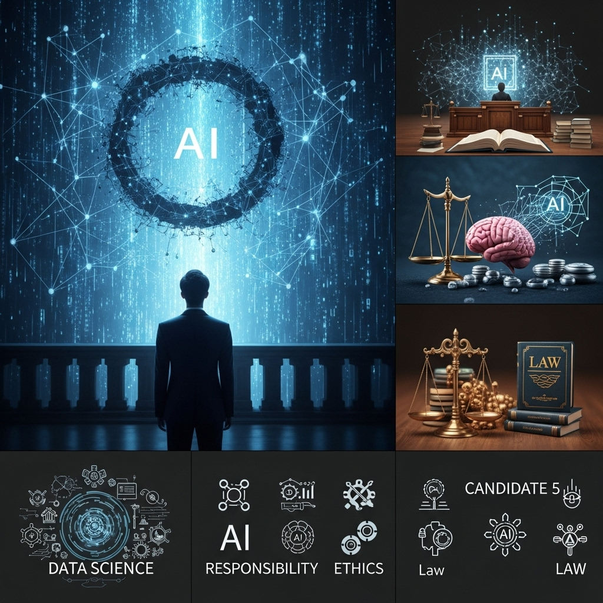
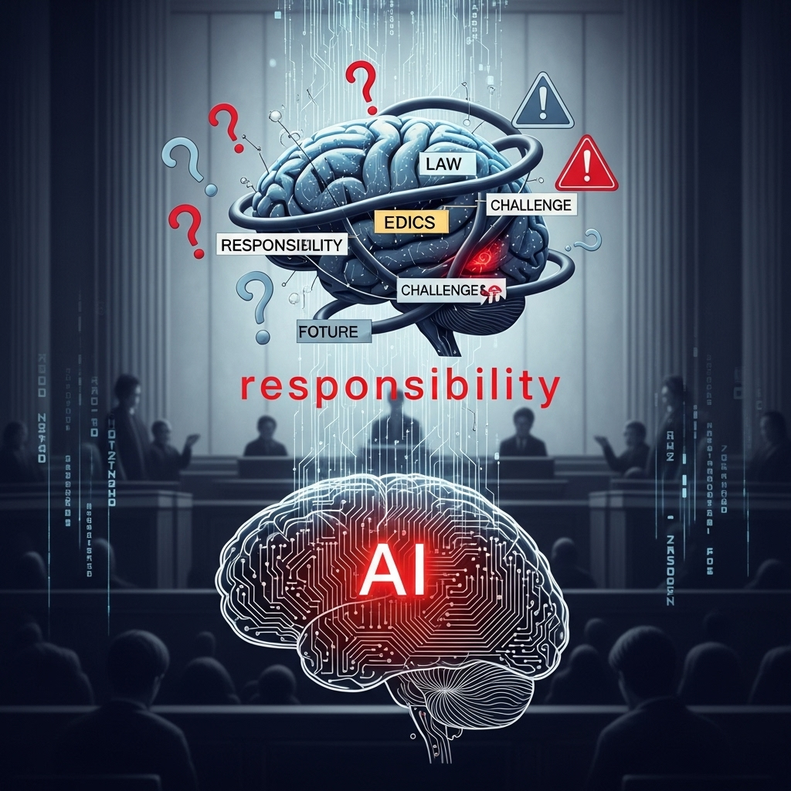
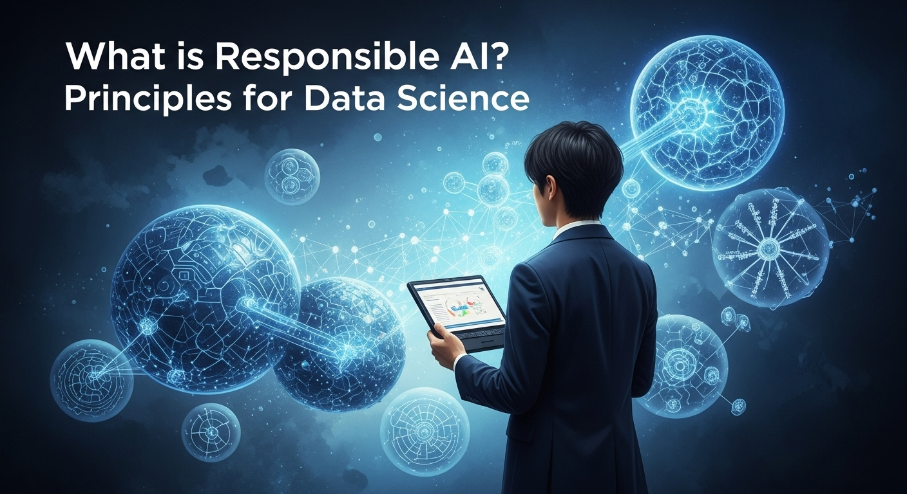
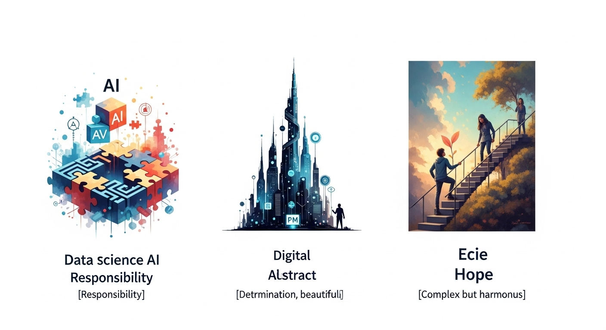
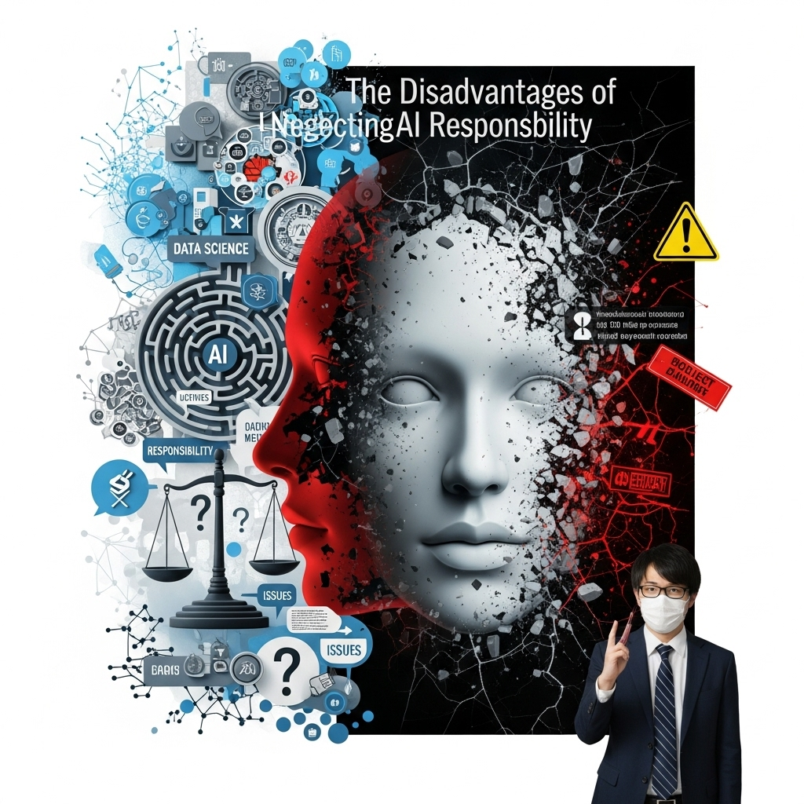
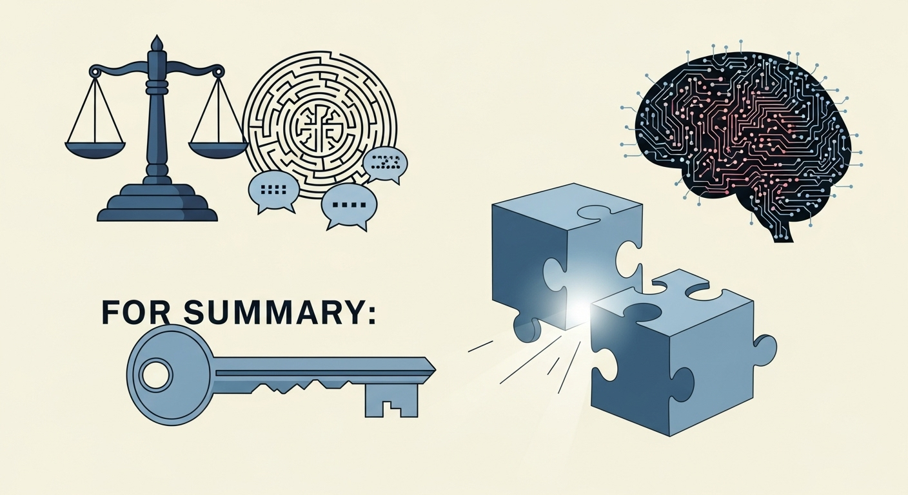

データサイエンスとAIの責任問題：PMが知るべき法的・倫理的課題と実践的対策

導入

こんにちは。AIを活用したプロジェクトを推進するプロジェクトマネージャー（PM）の皆様、日々の業務、本当にお疲れ様です。AI技術は、私たちのビジネスや社会に革命的な変化をもたらし、その可能性は無限に広がっているように感じられます。新しいサービスの企画、業務効率化の実現、そして未来を予測するインサイトの発見など、AIプロジェクトの舵取り役である皆様は、まさに時代の最先端で活躍されていることでしょう。
しかし、その輝かしい可能性の裏側で、私たちは新たな、そして非常に複雑な課題に直面しています。それが「AIの責任」という問題です。AIが下した判断によって誰かが不利益を被ったとき、あるいは予期せぬ事故が発生したとき、その責任は一体誰が負うのでしょうか？開発したエンジニアでしょうか？データを提供した企業でしょうか？それとも、AIを運用している私たち自身でしょうか？
この問いは、もはやSF映画の中だけの話ではありません。自動運転車の事故、採用活動におけるAIのバイアス、医療診断AIの誤診など、AIが社会に実装されるにつれて、その責任を問う声は日増しに大きくなっています。こうした状況の中、プロジェクトの全体を俯瞰し、成功へと導く役割を担うPMの皆様にとって、AIの法的・倫理的課題を理解し、適切に対処するスキルは、もはや「あれば望ましい」ものではなく、「不可欠な」ものとなりつつあります。
「技術的なことは専門家に任せればいい」と感じるかもしれません。しかし、AIの責任問題は、技術だけで解決できるものではありません。それは、法律、倫理、社会規範、そしてビジネス戦略が複雑に絡み合った、まさにプロジェクトマネジメントの核心に関わる課題なのです。リスクを管理し、ステークホルダーと円滑なコミュニケーションを図り、信頼される製品やサービスを世に送り出すためには、PM自身がこの問題の当事者として、深く理解し、リーダーシップを発揮する必要があります。
この記事では、データサイエンスとAIの責任問題という、壮大で少し難しく感じられるかもしれないテーマについて、PMの皆様の視点に立って、できる限り分かりやすく、そして実践的に解説していきます。
まず、なぜ今、AIの責任がこれほどまでに問われているのか、その背景から紐解きます。次に、PMが直面する具体的な課題とリスクを整理し、私たちが目指すべき「責任あるAI」とは何か、その基本原則を学びます。さらに、国内外の法規制やガイドラインの動向を押さえ、データサイエンスの現場で具体的にどのような対策を講じればよいのか、開発から運用までの実践的なアプローチをご紹介します。
そして、責任あるAIへの取り組みが、単なるリスク回避ではなく、いかにして企業の信頼性向上や新たなビジネスチャンスに繋がるのか、そのメリットと、逆に取り組まないことのデメリットを明らかにします。最後に、この分野で活躍するための人材育成やキャリアパスについても触れていきたいと思います。
少し長い旅路になるかもしれませんが、この記事を読み終える頃には、皆様がAIプロジェクトを推進する上での確かな羅針盤を手にし、自信を持って「責任あるAI」の実現に向けた一歩を踏み出せるようになっているはずです。それでは、一緒にこの重要で刺激的なテーマを探求していきましょう。
AIの責任が今なぜ問われるのか？
ほんの数年前まで、AIは一部の研究者や技術者のための専門分野でした。しかし、今や私たちの生活や仕事のあらゆる場面で、AIは当たり前の存在となりつつあります。この急激な変化こそが、「AIの責任」という問題を、避けては通れない現実的な課題として私たちの前に突きつけているのです。では、具体的にどのような背景から、この問題が重要視されるようになったのでしょうか。ここでは、4つの側面からその理由を掘り下げてみたいと思います。
AI技術の進化と社会実装の加速
AIの責任が問われるようになった最大の理由は、何と言ってもその技術の目覚ましい進化と、それに伴う社会実装の急速な加速にあります。
ディープラーニング技術のブレークスルー以降、AIの性能は飛躍的に向上しました。特に、近年登場した生成AI（Generative AI）は、人間が作成したかのような自然な文章や美しい画像、さらには音楽やプログラムコードまで生成できるようになり、多くの人々に衝撃を与えました。これにより、これまで専門家でなければ開発が難しかった高度なAIアプリケーションが、より身近で利用しやすいものになったのです。
この技術革新は、ビジネスの世界にも大きな影響を与えています。顧客対応のチャットボット、製品の需要予測、採用候補者のスクリーニング、金融商品のリスク評価、創薬プロセスの効率化など、AIが活用される領域は枚挙にいとまがありません。もはやAIは、一部の先進的な企業だけが取り組む「実験」ではなく、競争力を維持し、成長を続けるための「必須ツール」へと変貌を遂げました。
このようにAIが社会のインフラとして深く組み込まれるようになると、その一つ一つの判断が、人々の生活や企業の活動、ひいては社会全体に与える影響も格段に大きくなります。例えば、AIによる融資審査が特定の属性を持つ人々を不当に排除してしまえば、それは単なるプログラムのバグではなく、深刻な社会問題に発展します。AIが私たちの日常に深く浸透すればするほど、その振る舞いに対する社会的な監視の目も厳しくなり、その行動の結果に対する「責任」を問う声が大きくなるのは、ごく自然な流れと言えるでしょう。
予期せぬ結果や誤りによる損害リスク
AIは非常に強力なツールですが、決して万能でも完璧でもありません。むしろ、その複雑さゆえに、開発者ですら予測できないような、予期せぬ結果や誤りを引き起こす可能性があります。そして、その結果として生じる損害のリスクが、AIの責任問題をより深刻なものにしています。
具体的な例をいくつか見てみましょう。
- 自動運転車の事故: AIが運転を制御する自動運転車が、歩行者や他の車両を誤認識し、人身事故を引き起こすケースが報告されています。この場合、責任は自動車メーカーにあるのか、センサーの製造元か、AIソフトウェアの開発者か、あるいは所有者にあるのか、判断は非常に困難です。
- 医療診断AIの誤診: 医師の診断を補助するAIが、レントゲン画像からがんの兆候を見逃したり、逆に健康な人をがんと誤診したりする可能性があります。これにより、患者は適切な治療を受ける機会を失ったり、不必要な精神的・肉体的負担を強いられたりするかもしれません。
- 採用AIによる差別: 採用プロセスを効率化するために導入されたAIが、過去の採用データに含まれる無意識のバイアスを学習し、特定の性別や人種の応募者を不当に低い評価にしてしまう事例がありました。これは、個人のキャリアに深刻な影響を与えるだけでなく、企業の評判を大きく損なう原因となります。
- 生成AIによるフェイクニュースの拡散: 高度な文章生成能力を持つAIが悪用され、もっともらしい嘘の情報（フェイクニュース）が大量に生成・拡散されると、社会に混乱をもたらし、民主主義の基盤さえも揺り動かしかねません。
これらの事例が示すように、AIが引き起こす損害は、金銭的なものに留まらず、人の生命や健康、人権、そして社会の安定にまで及びます。AIの判断がもたらす影響が大きければ大きいほど、その判断が誤っていた場合の損害も甚大になります。だからこそ、私たちはAIを社会に導入するにあたり、こうしたリスクを事前に評価し、万が一問題が発生した際に誰がどのように責任を負うのかを、真剣に考えなければならないのです。
プロジェクトマネージャーが直面する責任問題
こうした状況の中、AIプロジェクトを率いるPMの皆様は、まさに責任問題の最前線に立たされています。従来のシステム開発プロジェクトとは異なり、AIプロジェクトのPMは、より広範で複雑な責任を問われる可能性があります。
まず、プロジェクトの成果物に対する責任です。開発したAIシステムが、前述のような予期せぬ損害を引き起こした場合、プロジェクトの最終責任者であるPMの監督責任が問われる可能性があります。仕様通りに動くシステムを作ったとしても、そのシステムが社会的に許容されない結果をもたらしたのであれば、「仕様通りだから問題ない」では済まされません。
次に、ステークホルダーへの説明責任です。経営層、顧客、利用者、そして場合によっては規制当局など、様々なステークホルダーに対して、AIシステムがどのように機能し、どのようなリスクがあり、そのリスクをどのように管理しているのかを、分かりやすく説明する責任があります。特に、AIの判断根拠が不明瞭な「ブラックボックス」問題は、説明責任を果たす上で大きな障壁となります。
さらに、倫理的・法的なコンプライアンス遵守の責任も重要です。個人情報保護法やGDPR（EU一般データ保護規則）のようなデータプライバシーに関する法規制はもちろんのこと、今後整備が進むであろうAIに特化した法律やガイドラインを遵守する体制を、プロジェクト内に構築しなければなりません。倫理的な配慮を欠いたAIは、たとえ合法であっても、社会的な批判を浴び、ビジネスに深刻なダメージを与える可能性があります。
これらの責任は、PM一人で抱え込めるものではありません。しかし、データサイエンティスト、エンジニア、法務、事業部門など、多様な専門家からなるチームをまとめ上げ、プロジェクト全体として責任を果たせる体制を築き、そのプロセスを管理していくことこそが、現代のAIプロジェクトにおけるPMの極めて重要な役割となっているのです。
データサイエンスが果たすべき重要な役割
AIの責任という複雑な問題に立ち向かう上で、データサイエンスは極めて重要な役割を担います。責任問題は倫理や法律の話だから、データサイエンティストには関係ない、ということは決してありません。むしろ、問題の根源を理解し、技術的な解決策を講じる上で、データサイエンスの知見は不可欠です。
例えば、バイアスの検出と緩和です。AIが差別的な判断を下す原因の多くは、学習データに潜む偏りにあります。データサイエンティストは、統計的な手法を用いてデータセット内のバイアスを定量的に評価し、サンプリング手法の調整やアルゴリズムの工夫によって、その影響を軽減することができます。
また、モデルの透明性と説明可能性の向上も、データサイエンスの重要な貢献領域です。なぜAIがそのような予測や判断を下したのか、その根拠を人間が理解できる形で提示する技術（Explainable AI, XAI）の研究開発が進んでいます。LIMEやSHAPといった具体的な手法を用いることで、複雑なモデルの挙動を解釈し、ステークホルダーへの説明責任を果たす助けとなります。
さらに、プライバシー保護技術の実装もデータサイエンティストの専門領域です。個人情報を保護しながらAIモデルを学習させる「差分プライバシー」や「連合学習」といった先進的な技術を実装することで、データの有用性を損なうことなく、プライバシー侵害のリスクを低減させることが可能です。
このように、データサイエンスは、AIの責任問題を「仕方がないリスク」として諦めるのではなく、「技術的に管理・制御可能な課題」として捉え直すための強力な武器となります。PMの皆様は、データサイエンティストと密に連携し、彼らの専門知識を最大限に活用して、より安全で信頼性の高いAIシステムを構築していくことが求められているのです。AIの社会実装が加速する今だからこそ、その光と影の両面を正しく理解し、責任ある形で技術の恩恵を社会に届けていく。その重責が、私たち一人ひとりに課せられていると言えるでしょう。
AIの責任が問われる具体的な課題とリスク

AIの責任問題と一言で言っても、その内容は多岐にわたります。プロジェクトを適切に管理するためには、漠然とした不安を抱えるのではなく、具体的にどのような課題やリスクが存在するのかを明確に理解しておくことが重要です。ここでは、PMの皆様が特に注意すべき5つの具体的な課題とリスクについて、詳しく見ていきましょう。
責任の所在が不明確になる「責任の連鎖」
AIシステムが何らかの損害を引き起こしたとき、最も厄介な問題の一つが「一体、誰の責任なのか？」という問いです。従来の製品であれば、製造物責任法（PL法）などに基づき、製造者に責任を求めることが一般的でした。しかし、AIシステムの場合、その責任の所在を特定するのは非常に困難です。
考えてみてください。一つのAIシステムは、実に多くの要素と人々が関わって作られています。
- データ提供者: AIの学習に使われたデータセットを提供した企業や個人。
- アルゴリズム開発者: AIモデルの基礎となるアルゴリズムを設計した研究者やオープンソースコミュニティ。
- AIモデル開発者（データサイエンティスト）: データを使い、特定の目的のためにAIモデルを訓練したエンジニア。
- システムインテグレーター: 開発されたAIモデルを、実際の製品やサービスに組み込んだ企業。
- 運用・サービス提供者: 完成したAIサービスを、顧客に提供し、日々運用している企業。
- 利用者（ユーザー）: AIシステムを実際に利用し、その判断に基づいて行動する個人や企業。
例えば、AIによる診断支援システムが誤診を下し、患者に損害を与えたとします。その原因は、学習データに偏りがあったからかもしれません（データ提供者の問題）。あるいは、アルゴリズム自体に欠陥があった可能性もあります（アルゴリズム開発者の問題）。もしかしたら、モデルの訓練方法が不適切だったのかもしれませんし（モデル開発者の問題）、運用中のシステムの監視を怠っていたのかもしれません（運用者の問題）。さらには、利用した医師がAIの提示した情報を鵜呑みにしてしまったことにも、一因があるかもしれません（利用者の問題）。
このように、AIが引き起こす問題の責任は、単一の主体に帰することが難しく、まるで鎖（チェーン）のようにつながった複数の関係者に分散してしまいます。これを「責任の連鎖（Chain of Responsibility）」あるいは「責任の空白」と呼びます。PMとしては、プロジェクトの企画段階から、この責任の連鎖を意識し、契約書などで各ステークホルダーの役割と責任範囲を可能な限り明確にしておくことが、将来的な紛争を避ける上で極めて重要になります。
AIの不完全・不正確・有害出力による影響
AIは、学習したデータの範囲内で非常に高い精度を発揮することがありますが、それは決して完璧を意味するものではありません。AIの出力は、本質的に確率的なものであり、常に不完全・不正確である可能性を内包しています。さらに、悪意の有無にかかわらず、人や社会にとって有害な情報を出力してしまうリスクも存在します。
不完全・不正確な出力の例としては、前述の医療診断の誤診や、自動運転車の物体誤認識が挙げられます。また、天気予報AIが台風の進路を大きく見誤ったり、株価予測AIが市場の暴落を予測できずに大きな損失を生んだりすることも考えられます。これらの問題は、AIの精度を100%にすることが原理的に不可能である以上、完全にはなくせません。重要なのは、AIが間違いを犯す可能性を前提としてシステムを設計し、その影響を最小限に抑えるための仕組み（例えば、人間の専門家による最終確認プロセスなど）を組み込むことです。
一方で、より深刻なのが有害な出力（Harmful Output）です。これには、いくつかのパターンがあります。
- 差別的・攻撃的なコンテンツの生成: 対話型AIが、ヘイトスピーチや差別的な発言を学習してしまい、ユーザーに対して不適切な言葉を投げかけるケース。
- 危険な情報の提供: ユーザーからの質問に対し、爆弾の作り方や自傷行為の方法など、危険で違法な情報を提供してしまうケース。
- 偽情報の生成と拡散: 生成AIを用いて、政治家に関する偽のスキャンダルや、企業に関する虚偽のネガティブ情報を生成し、社会的な混乱や経済的な損害を引き起こすケース。
これらの有害な出力は、企業のブランドイメージを著しく損なうだけでなく、社会的な安全を脅かすことにも繋がりかねません。PMは、開発チームと協力し、不適切な入力をフィルタリングする仕組みや、生成されたコンテンツを監視・レビューする体制を構築するなど、こうしたリスクへの対策を講じる必要があります。
プライバシー侵害とデータ保護の課題
AI、特に機械学習モデルは、大量のデータを「燃料」として性能を向上させます。しかし、そのデータに個人のプライバシーに関わる情報が含まれている場合、その取り扱いには細心の注意が必要です。データ保護とプライバシー侵害は、AIプロジェクトにおける最も重大な法的リスクの一つと言えるでしょう。
多くの国や地域では、個人データの取り扱いについて厳格な法律が定められています。代表的なものが、EUの「GDPR（一般データ保護規則）」です。GDPRは、個人データの処理に関する厳しいルールを定めており、違反した企業には巨額の制裁金が科される可能性があります。日本にも「個人情報保護法」があり、同様に個人情報の適切な管理を企業に義務付けています。
AIプロジェクトにおいてプライバシー侵害のリスクが生じる場面は様々です。
- 不適切なデータ収集: 本人の同意を得ずに、あるいは利用目的を偽って個人情報を収集し、AIの学習に利用する。
- データ漏洩: AIの学習に利用している個人データが、サイバー攻撃などによって外部に漏洩する。
- プロファイリングによるプライバシー侵害: 購買履歴や閲覧履歴などのデータをAIで分析し、個人の趣味嗜好、健康状態、政治的信条といった機微な情報を推測（プロファイリング）し、本人が意図しない形で利用する。
- 再識別（Re-identification）: 匿名化されたデータであっても、複数の情報を組み合わせることで、特定の個人を再識別できてしまうリスク。
PMは、プロジェクトの初期段階で法務部門と連携し、利用するデータが関連法規に準拠しているか、適切な同意取得や匿名化処理が行われているかを確認しなければなりません。また、データを安全に管理するためのセキュリティ対策を徹底することも不可欠です。プライバシー保護は、単なるコンプライアンス要件ではなく、ユーザーからの信頼を得るための基本であり、これを軽視したプロジェクトは成功し得ない、と心に刻む必要があります。
バイアス（偏見）を含むAIモデルのリスク
AIにおける「バイアス」とは、AIモデルが特定の属性（性別、人種、年齢など）を持つ人々に対して、体系的に不公平または不利益な判断を下す傾向のことを指します。これは、AIが意図的に差別をしようとしているわけではありません。多くの場合、AIの学習データに、人間社会に存在する歴史的・社会的な偏見が反映されていることが原因です。
例えば、過去の採用データを用いて採用支援AIを開発したとします。もし、その企業が過去に男性ばかりを管理職に登用してきたとしたら、AIは「男性であること」を管理職候補としての有望な特徴として学習してしまう可能性があります。その結果、AIは性別による偏見を再生産し、能力のある女性候補者を不当に低い評価にしてしまうかもしれません。
このようなAIバイアスがもたらすリスクは深刻です。
- 社会的な不平等の助長: 金融、雇用、司法、教育といった重要な領域でAIのバイアスが放置されると、社会に存在する格差や差別をさらに固定化・増幅させてしまう恐れがあります。
- ビジネス機会の損失: 特定の顧客層を無意識に排除してしまうことで、潜在的な市場を逃してしまう可能性があります。例えば、ある製品のマーケティングAIが、特定の年齢層にしか広告を表示しない設定になっていれば、他の年齢層の顧客を獲得する機会を失ってしまいます。
- レピテーションリスク: AIによる差別的な判断が明らかになれば、メディアやSNSで大きく報じられ、企業の評判は地に落ち、顧客からの信頼を失うことになります。Amazonが開発した採用AIが女性に対して不利な評価をすることが発覚し、プロジェクトが中止に追い込まれた事件は、その象徴的な例です。
PMは、データサイエンティストと協力し、プロジェクトのあらゆる段階でバイアスに注意を払う必要があります。学習データの構成をチェックし、偏りがあれば是正する。モデルの性能を評価する際には、全体の正解率だけでなく、属性ごとの公平性指標（例えば、男女間の合格率の差など）も確認する。そして、モデルの運用開始後も、その判断が不公平な結果を招いていないかを継続的に監視する。こうした地道な努力が、公平で信頼されるAIを実現するためには不可欠です。
透明性と説明責任（アカウンタビリティ）の欠如
ディープラーニングのような現代のAIモデルは、非常に複雑な構造をしています。そのため、なぜAIが特定の結果を出力したのか、その判断プロセスを人間が完全に理解することは困難な場合があります。この問題は「ブラックボックス問題」として知られています。
この透明性の欠如は、AIの責任を考える上で大きな障害となります。
- 問題の原因究明が困難: AIが誤った判断をした際に、その原因がモデルのどこにあるのかを特定できなければ、修正や改善を行うことができません。
- 利用者への説明ができない: 例えば、AIに融資を断られた顧客がその理由を尋ねてきたときに、「AIがそう判断したので理由は分かりません」としか答えられなければ、顧客は到底納得できないでしょう。これは、顧客満足度の低下や、訴訟リスクの増大に繋がります。
- 規制要件を満たせない: GDPRなどの法規制では、アルゴリズムによる自動的な意思決定について、本人に説明を求める権利（説明要求権）が定められています。透明性のないAIは、こうした法的要件を満たせない可能性があります。
この課題に対応するためには、説明責任（アカウンタビリティ）を確保する仕組みが必要です。アカウンタビリティとは、AIシステムの挙動やその結果について、関係者が責任を持って説明できるようにしておくことを意味します。
PMが推進すべき対策としては、
- 説明可能なAI（XAI）技術の導入: モデルの判断根拠を可視化する技術（LIME, SHAPなど）を活用し、なぜその結論に至ったのかを分析できるようにする。
- 意思決定プロセスの記録: AIの入力データ、出力結果、そしてその判断がどのように利用されたのかを、監査可能な形で記録・保存しておく。
- 人間による監督体制の構築: AIの判断を最終的なものとせず、必ず人間が介在し、その妥当性を検証・承認するプロセスを設ける。
AIの判断プロセスを可能な限り透明にし、何か問題が起きた際にはその経緯を遡って検証し、責任を持って説明できる体制を整えること。これが、ブラックボックスという課題を乗り越え、社会から信頼されるAIを構築するための鍵となるのです。
責任あるAIとは？データサイエンスが目指す原則

これまで、AIがもたらす様々なリスクや課題について見てきました。では、私たちはこれらの課題にどう立ち向かっていけばよいのでしょうか。その道標となるのが、「責任あるAI（Responsible AI）」という考え方です。これは、AI技術を開発・利用する際に、倫理的・法的・社会的な影響を十分に考慮し、人間中心の価値観に基づいて、安全で信頼でき、公平な方法でAIを設計・運用していこうというアプローチです。ここでは、責任あるAIの基本的な概念と、その実現のために遵守すべき主要な倫理原則について、詳しく解説していきます。
責任あるAIの基本的な概念
「責任あるAI」は、単一の技術やツールを指す言葉ではありません。それは、AIプロジェクトの構想から開発、運用、廃棄に至るまでのライフサイクル全体を貫く、組織的な文化であり、一連のプロセスであり、そして行動規範です。
その中核にあるのは、「AIを人間の幸福と社会の発展のために、いかにして賢く、正しく使うか」という問いです。AIの性能を最大化することだけを目的とするのではなく、その利用がもたらすポジティブな影響を最大化し、同時にネガティブな影響を最小化することを目指します。
Microsoft、Google、IBMといった大手テクノロジー企業や、政府、学術機関などが、それぞれ独自の「責任あるAI」に関する原則を公表していますが、その根底には共通する価値観があります。それは、AIシステムが以下の要件を満たすべきだという考え方です。
- 人々の役に立つ（Beneficial）: 人々の生活を豊かにし、社会的な課題の解決に貢献するものであるべき。
- 公平である（Fair）: 特定の個人や集団を不当に差別したり、不利益を与えたりするべきではない。
- 安全で信頼できる（Safe and Reliable）: 意図された通りに安定して動作し、予期せぬ危害を及ぼさないものであるべき。
- 透明性がある（Transparent）: その判断プロセスや能力、限界が、人間にとって理解可能であるべき。
- プライバシーを尊重する（Privacy-Respecting）: 個人のデータを尊重し、プライバシーを侵害しない形で設計・運用されるべき。
- 人間が責任を負う（Accountable）: AIシステムの振る舞いについて、最終的には人間が責任を負い、説明できる体制が整っているべき。
PMの皆様は、これらの概念をプロジェクトの基本方針として掲げ、チームメンバー全員が共有できるようにすることが重要です。プロジェクトの目標設定、要件定義、設計、テストの各段階で、「この決定は『責任あるAI』の考え方に沿っているか？」と自問自答する習慣をつけることが、実践の第一歩となります。
遵守すべき主要な倫理原則
「責任あるAI」の概念を、より具体的な行動指針に落とし込んだものが「倫理原則」です。ここでは、多くの企業や組織で共通して掲げられている6つの主要な原則と、それらを包括するELSIという考え方について、一つひとつ丁寧に見ていきましょう。これらの原則は、PMがAIプロジェクトの健全性をチェックするためのリストとしても活用できます。
倫理原則１．公平性（Fairness）
公平性（Fairness）とは、AIシステムが、人々の性別、人種、年齢、性的指向、障害の有無といった属性に基づいて、不当な差別や偏った扱いをしないことを意味します。これは、AIの責任を考える上で最も重要な原則の一つです。
前述の通り、AIのバイアスの多くは学習データに起因します。そのため、公平性を確保するための取り組みは、データ収集の段階から始まります。
- 多様なデータの収集: 特定のグループに偏らないよう、できるだけ多様で代表性のあるデータを収集する努力が必要です。
- データ内のバイアスの特定: 統計的な手法を用いて、データセットに潜在的なバイアスがないかを分析します。例えば、男女間のデータ量に大きな偏りはないか、特定の人種に関するデータが不足していないかなどを確認します。
モデル開発段階では、
- 公平性指標による評価: モデルの精度だけでなく、異なるグループ間での性能差（例えば、顔認識AIの男女間での認識率の差）を測定し、その差が許容範囲内であるかを確認します。
- バイアス緩和技術の適用: モデルの学習プロセスや出力結果を調整し、不公平な影響を軽減するアルゴリズム（例：Adversarial Debiasing, Reweighing）を適用します。
PMは、プロジェクトの初期段階で「誰にとっての公平性か？」を定義し、ステークホルダーと合意形成を図ることが重要です。公平性の定義は、文脈によって様々であり、絶対的な正解はありません。例えば、融資審査において「全ての申込者に同じ基準を適用すること」が公平なのか、それとも「歴史的に不利な立場に置かれてきたグループに、より積極的な機会を提供すること」が公平なのか、社会的な価値判断が求められる場合もあります。こうした難しい問いに対して、チーム内でオープンな議論を行う場を設けることが、PMのリーダーシップの見せ所です。
倫理原則２．信頼性（Reliability）と安全性（Safety）
信頼性（Reliability）とは、AIシステムが、様々な状況下で、意図された通りに一貫して正確に動作することを指します。安全性（Safety）とは、AIシステムが、通常の使用時だけでなく、予期せぬ状況や誤った使用方法においても、人々に危害を及ぼしたり、損害を与えたりしないことを保証することです。
この原則を確保するためには、徹底したテストと品質管理が不可欠です。
- 頑健性（Robustness）のテスト: AIシステムが、ノイズの多いデータや、これまで学習したことのない未知のデータ（分布外データ）に直面したときに、どのように振る舞うかをテストします。例えば、自動運転車が、大雨や霧、あるいは道路上の予期せぬ障害物といった悪条件下でも、安全に機能するかを検証します。
- 敵対的攻撃（Adversarial Attacks）への耐性: AIモデルの入力に、人間には知覚できないような微小な変更を加えることで、意図的にAIを誤作動させる「敵対的攻撃」という手法が存在します。こうした攻撃に対する防御策を講じ、システムのセキュリティを確保することが重要です。
- フェイルセーフ設計: 万が一AIシステムが機能不全に陥った場合に、被害を最小限に食い止めるための仕組み（フェイルセーフ）を設計します。例えば、医療用AIが異常を検知した場合は、自動的に機能を停止し、人間の医師に警告を発する、といった設計が考えられます。
PMは、AIシステムの利用シナリオを広く想定し、潜在的なリスクを洗い出す「リスクアセスメント」を実施する必要があります。そして、特定されたリスクに対して、技術的な対策だけでなく、運用上のルール（例えば、特定の状況ではAIの使用を禁止する、など）を定めることも検討すべきです。
倫理原則３．透明性（Transparency）と説明可能性
透明性（Transparency）とは、AIシステムが「何ができて、何ができないのか」「どのようなデータを使って、どのように判断しているのか」といった情報を、利用者や関係者に対してオープンにすることを意味します。説明可能性（Explainability）は、特にAIの個々の判断に対して、「なぜその結論に至ったのか」という理由を、人間が理解できる形で説明できる能力を指します。
この原則は、AIへの信頼を構築する上で不可欠です。自分が使っているシステムが、どのような理屈で動いているのか全く分からない「ブラックボックス」では、安心してその判断を受け入れることはできません。
透明性と説明可能性を高めるための実践的なアプローチには、以下のようなものがあります。
- モデルカード（Model Cards）の作成: AIモデルの特性をまとめた文書を作成し、公開します。モデルカードには、モデルの目的、性能評価の結果、公平性に関する分析、想定される利用方法、そして限界や潜在的なリスクといった情報が記載されます。
- 説明可能なAI（XAI）ツールの活用: 前述のLIMEやSHAPのようなツールを用いて、特定の予測結果に最も影響を与えた入力要素は何かを可視化します。これにより、「この顧客の融資申請が承認されたのは、過去の返済実績と安定した収入が大きく評価されたためです」といった具体的な説明が可能になります。
- シンプルなモデルの選択: 常に最も複雑で高性能なモデルを選択するのではなく、ユースケースによっては、解釈しやすいシンプルなモデル（例えば、決定木や線形回帰）を意図的に選択することも、透明性を確保する上での有効な戦略です。
PMは、プロジェクトの対象となるユーザーやステークホルダーにとって、どのレベルの透明性や説明可能性が必要かを検討し、それをシステムの要件として定義する必要があります。
倫理原則４．プライバシー（Privacy）とセキュリティ
プライバシー（Privacy）の原則は、AIシステムが個人のデータを尊重し、本人の同意なく収集・利用したり、プライバシーを侵害したりしないことを求めます。セキュリティ（Security）は、AIシステムとその基盤となるデータやインフラを、不正アクセスやサイバー攻撃から保護することを意味します。この二つは密接に関連しており、強力なセキュリティなくしてプライバシーの保護はあり得ません。
この原則を遵守するためには、「プライバシー・バイ・デザイン（Privacy by Design）」という考え方が重要です。これは、プロジェクトの企画・設計段階からプライバシー保護を組み込むというアプローチです。
- データ最小化の原則: AIモデルの学習に必要な最小限のデータのみを収集・利用し、不要な個人情報は収集しない。
- 匿名化・仮名化技術の適用: 個人を特定できないようにデータを加工する。ただし、完全な匿名化は困難であるため、再識別のリスクも考慮する必要があります。
- 先進的なプライバシー保護技術の導入:
- 差分プライバシー（Differential Privacy）: データに意図的にノイズを加えることで、個人の情報が分析結果から特定されるのを防ぐ技術。
- 連合学習（Federated Learning）: データをサーバーに集約せず、各ユーザーのデバイス上でモデルを学習させることで、プライバシーを保護する技術。
- 厳格なアクセス制御と監視: データやAIモデルにアクセスできる担当者を限定し、全てのアクセスログを記録・監視する。
PMは、データガバナンス体制を構築し、データのライフサイクル（収集、保存、利用、廃棄）全体を通じて、プライバシーとセキュリティが確保されるプロセスを確立する責任があります。
倫理原則５．アカウンタビリティ（説明責任）
アカウンタビリティ（Accountability）とは、AIシステムがもたらした結果に対して、誰が、どのように責任を負うのかが明確であり、そのプロセス全体を検証・説明できる状態にあることを意味します。これは、これまで述べてきた他の原則を束ねる、包括的な概念とも言えます。
アカウンタビリティを確保するためには、技術的な仕組みだけでなく、組織的な体制整備が不可欠です。
- 責任体制の明確化: AIシステムの開発、運用、監視に関する各担当者の役割と責任を明確に定義します。問題が発生した際のエスカレーションルートも定めておく必要があります。
- 倫理審査委員会の設置: AIプロジェクトが倫理原則に準拠しているかをレビューし、助言を与えるための独立した組織（AI倫理委員会など）を社内に設置する。
- 監査証跡（Audit Trail）の確保: AIの意思決定プロセスに関わる全ての情報（使用したデータ、モデルのバージョン、パラメータ設定、出力結果など）を記録し、後から追跡・検証できるようにしておきます。
- 人間による監督（Human Oversight）: AIの判断を自動的に実行するのではなく、重要な意思決定（特に人々に大きな影響を与えるもの）については、必ず人間が介在し、最終的な判断を下す「Human-in-the-Loop」の仕組みを導入します。
PMは、プロジェクトが「野放し」の状態にならないよう、適切なガバナンス体制を設計・運用する中心的な役割を担います。
倫理原則６．包括性（Inclusiveness）
包括性（Inclusiveness）とは、AI技術が、一部の限られた人々だけでなく、多様な背景を持つ全ての人々にとって、公平にアクセス可能であり、その恩恵を受けられるように設計されるべきだという原則です。これは、公平性の原則をさらに発展させた考え方とも言えます。
包括的なAIを設計するためには、
- 多様な開発チームの構築: 開発チーム自体が、性別、人種、年齢、文化、専門性などにおいて多様なメンバーで構成されることが重要です。多様な視点があることで、単一的な視点では見過ごされがちな問題点やバイアスに気づくことができます。
- アクセシビリティへの配慮: 視覚や聴覚に障害のある人、高齢者など、様々な身体的・認知的な特性を持つ人々でも利用しやすいように、AIシステムのインターフェースを設計します。
- 多様なユーザーとの共創: 開発プロセスの早い段階から、AIシステムが影響を与える可能性のある様々なコミュニティの代表者を巻き込み、彼らの意見やフィードバックを製品設計に反映させます。
PMは、効率性や短期的な利益だけを追求するのではなく、自分たちの作るAIが、社会の誰一人取り残さない（Leave No One Behind）ものになっているか、という広い視野を持つことが求められます。
ELSI（Ethical, Legal and Social Issues）への対応
最後に、これらの倫理原則を横断する重要な視点として、ELSI（エルシー）という言葉を紹介します。これは、倫理的（Ethical）、法的（Legal）、社会的（Social）課題（Issues）の頭文字を取ったもので、新しい科学技術を社会に導入する際に、技術的な側面だけでなく、これらの複合的な課題を総合的に検討する必要があるという考え方です。
AIの責任問題は、まさにELSIの典型例です。
- 倫理的課題: 何が「公平」か、人間の自律性をどう守るか、といった価値判断に関わる問い。
- 法的課題: 既存の法律（個人情報保護法、著作権法、製造物責任法など）をどう適用するか、新たなAI規制は必要か、といった法制度に関わる問い。
- 社会的課題: AIが雇用に与える影響、情報格差の拡大、社会の意思決定プロセスへの影響など、社会構造に関わる問い。
PMは、データサイエンティストやエンジニアだけでなく、法務、倫理学者、社会学者、そして市民といった多様なステークホルダーと対話し、ELSIの観点からプロジェクトを多角的に評価し、社会に受け入れられるAIのあり方を模索していく必要があります。責任あるAIの実現は、技術者だけの仕事ではなく、社会全体で取り組むべき壮大なプロジェクトなのです。
AIの責任に関わる法的枠組みと倫理ガイドライン
責任あるAIを実現するためには、これまで見てきた倫理原則を組織の理念として掲げるだけでは不十分です。私たちは、社会のルールである法律や、業界のベストプラクティスであるガイドラインを正しく理解し、それらを遵守する体制を構築しなければなりません。AI技術の進化のスピードに法整備が追いついていない側面もありますが、世界各国でルール作りの動きは活発化しています。ここでは、PMとして知っておくべき国内外の法的枠組みとガイドラインの動向について解説します。
国内外のAI倫理ガイドラインと法制度の動向
AIの責任に関するルール作りは、特定の国だけで完結するものではありません。インターネットを通じてデータやサービスが国境を越えてやり取りされる現代において、グローバルな視点で各国の動向を把握しておくことは極めて重要です。
国際的な議論をリードしている組織の一つがOECD（経済協力開発機構）です。OECDは2019年に、AIに関する初の政府間合意として「AI原則」を採択しました。この原則は、「包摂的な成長、持続可能な開発及び幸福（inclusive growth, sustainable development and well-being）」をAIが目指すべき価値として掲げ、以下の5つの原則を示しています。
- 人間中心の価値と公平性
- 頑健性、セキュリティ及び安全性
- 透明性と説明可能性
- アカウンタビリティ
- 持続可能な地球のためのAI
これらの原則は、多くの国々のAI戦略やガイドラインの基礎となっており、国際的な共通認識を形成する上で大きな役割を果たしています。PMとしては、自社のAI開発方針が、こうした国際的なスタンダードと整合性が取れているかを確認する視点が求められます。
また、ユネスコやG7といった国際的な枠組みでも、AI倫理に関する議論が活発に行われています。特にG7広島サミット（2023年）で合意された「広島AIプロセス」は、生成AIのリスクに対応するための国際的な指針作りを目指すものであり、今後の動向が注目されます。
このように、国際社会全体で「無法地帯」ではなく、信頼できるAIの実現に向けたルール作りを進めようという大きな潮流があることを、まずは理解しておきましょう。
規制動向１．各国の主要な規制動向
国際的な原則と並行して、各国・地域では、より具体的な法規制の整備が進められています。特に注目すべきは、EU、米国、そして中国の動きです。
【EU：AI法（AI Act）】
EUは、世界に先駆けてAIに関する包括的な法的枠組みである「AI法案」の制定を進めています。この法案の最大の特徴は、「リスクベース・アプローチ」を採用している点です。AIシステムが人々の権利や安全に与えるリスクのレベルに応じて、異なる規制を課すという考え方です。
- 許容できないリスク: サブリミナル操作や社会的スコアリングなど、人々の安全や権利を脅かすと見なされるAIシステムは、原則として禁止されます。
- ハイリスク: 採用、融資審査、重要インフラの制御、法執行など、人々の生活に重大な影響を与える可能性のあるAIシステムは「ハイリスク」に分類されます。これらには、高品質なデータの使用、記録の保存、人間による監督、透明性の確保など、厳格な義務が課せられます。
- 限定的なリスク: チャットボットなど、AIと対話していることをユーザーが認識する必要があるシステムには、その旨を開示する義務が課せられます。
- 最小限のリスク: 上記以外の大半のAIシステム（スパムフィルターやビデオゲームなど）は、特に規制の対象とはなりません。
EUのAI法は、GDPRと同様に「域外適用」の考え方が取り入れられる可能性があり、EU市場でAIサービスを提供する日本企業にも大きな影響を与えることが予想されます。PMは、自社が開発・提供するAIがどのリスクレベルに分類される可能性があるかを早期に検討し、対応を準備しておく必要があります。
【米国：AI権利章典の草案（Blueprint for an AI Bill of Rights）】
米国では、連邦レベルでの包括的なAI規制はまだ存在しませんが、ホワイトハウスが2022年に「AI権利章典の草案」を発表しました。これは法的な拘束力を持つものではありませんが、AI時代において人々が保護されるべき5つの原則を掲げ、将来の政策立案の指針となるものです。
- 安全で効果的なシステム
- アルゴリズムによる差別からの保護
- データ・プライバシー
- 通知と説明
- 人間による代替手段、配慮、フォールバック
州レベルでは、カリフォルニア州やイリノイ州などで、プライバシーやバイアスに関する独自の規制が導入されており、企業は連邦と州の両方の動向を注視する必要があります。
【中国】
中国は、国を挙げてAI開発を推進する一方、特定の分野に特化した規制を次々と導入しています。例えば、「インターネット情報サービスアルゴリズム推薦管理規定」では、ユーザーに不利益な差を設けることの禁止や、アルゴリズムをオフにする選択肢の提供を義務付けています。また、生成AIサービスに関しても、社会主義的価値観を遵守することや、生成コンテンツにラベルを付けることなどを求める暫定規則を施行しており、独自の規制体系を構築しています。
規制動向２．日本におけるAI関連の法整備
日本では、EUのようなトップダウンの包括的な規制（ハードロー）ではなく、まずは事業者による自主的な取り組みを促すガイドライン（ソフトロー）を中心に、ルール作りが進められています。これは、イノベーションを阻害しないように、柔軟なガバナンスを目指すという考え方に基づいています。
政府は「AI戦略2022」の中で、「人間中心のAI社会原則」を掲げ、その実現に向けた取り組みを進めています。この原則は、以下の7つから構成されています。
- 人間の尊厳
- 多様性と包摂性
- 持続可能性
- 安全性
- セキュリティ
- プライバシー
- 透明性
- アカウンタビリティ
- 教育・リテラシー
- 公正な競争環境
また、総務省は「AIネットワーク社会推進会議」、経済産業省は「AI原則実践のためのガバナンス・ガイドライン」などを公表し、企業が責任あるAIを実践するための具体的な指針を示しています。
これらのガイドラインは、法的な強制力はありませんが、社会的な規範として機能し、万が一訴訟などになった場合には、企業が「相当の注意義務」を果たしていたかどうかを判断する上での基準となり得ます。PMは、これらのガイドラインの内容を理解し、自社のAI開発プロセスに組み込んでいくことが、リスク管理の観点から非常に重要です。
ただし、AIに特化した新しい法律がないからといって、無法地帯というわけでは決してありません。個人情報保護法、著作権法、製造物責任法、不正競争防止法といった既存の法律が、AIに関連する様々な問題に適用されます。プロジェクトを進める上では、これらの既存法規との関連性を常に意識し、必要に応じて法務部門の助言を求める姿勢が不可欠です。
業界ごとのコンプライアンスと適用事例
AIの責任に関するルールは、全ての業界に一律に適用されるわけではありません。特に、人々の生命や財産に直接的な影響を与える業界では、より厳格な規制や独自のガイドラインが設けられる傾向にあります。
例えば、
- 医療分野: 医療機器としてAIソフトウェアを扱う場合、医薬品医療機器等法（薬機法）に基づき、国からの承認・認証を得る必要があります。その審査プロセスでは、AIの性能や安全性、品質管理体制などが厳しく問われます。
- 自動運転分野: 道路交通法や道路運送車両法が改正され、特定の条件下での自動運転（レベル3以上）が実用化されています。事故が発生した際の責任の所在を明確にするため、運転操作の記録装置の搭載が義務付けられるなど、独自のルールが整備されています。
- 金融分野: 金融庁は、金融機関におけるAI活用の実態調査や、AIガバナンスに関する考え方を公表しています。特に、与信審査や保険引受などの場面でAIを利用する際には、公平性や説明責任が強く求められます。
PMは、自社が属する業界特有の規制やガイドラインを深く理解し、それに準拠したプロジェクト計画を立てる必要があります。業界団体が主催する勉強会に参加したり、専門家の意見を聞いたりすることも有効です。
事例１．金融・保険業務におけるAI活用と責任
金融・保険業界は、AI活用の先進的な事例が豊富な一方で、その責任問題が特に厳しく問われる分野です。具体的な事例を通して、PMが直面する課題を考えてみましょう。
【与信審査モデル】
銀行やクレジットカード会社では、顧客の年収、勤務先、過去の借入履歴といったデータに基づき、AIが融資の可否や貸付限度額を判断するモデルが広く利用されています。
- 課題:
- 公平性: モデルが特定の居住地域や職業の人々に対して、不当に低いスコアを付けてしまうバイアスのリスク。これが「レッドライニング（特定地域への融資拒否）」のような差別的な慣行に繋がる可能性があります。
- 説明責任: 顧客から融資を断った理由を問われた際に、AIの判断根拠を具体的に説明する必要があります。「総合的な判断です」といった曖昧な説明は許されません。
- PMが取るべき対策:
- モデル開発時に、人種、性別、年齢などの保護されるべき属性が、審査結果に不当な影響を与えていないかを検証する。
- 個々の審査結果について、どの要素がポジティブ／ネガティブに働いたかを可視化するXAIツールを導入する。
- AIの判断を最終決定とせず、人間の審査官がレビューし、最終的な責任を負うプロセスを構築する。
【保険金の不正請求検知】
損害保険会社では、過去の請求データから不正請求のパターンを学習したAIを用いて、疑わしい請求を自動的に検知するシステムが導入されています。
- 課題:
- 信頼性（偽陽性）: AIが、正当な請求を誤って「不正の疑いあり」と判定してしまうリスク（偽陽性）。これにより、顧客は不快な思いをし、支払いが遅延するなどの不利益を被る可能性があります。
- プライバシー: 請求内容には、病歴などの非常に機微な個人情報が含まれるため、データ管理には万全のセキュリティが求められます。
- PMが取るべき対策:
- システムの目的を「不正請求の確定」ではなく、「調査担当者が確認すべき案件の優先順位付け」と位置づけ、AIの役割を明確にする。
- 偽陽性率と偽陰性率（不正を見逃す割合）のトレードオフを考慮し、ビジネス上の許容範囲を定義する。
- データへのアクセス権限を厳格に管理し、監査証跡を完全に記録する。
企業が取るべき法的リスク管理の姿勢
目まぐるしく変化する法規制の動向に対応し、法的リスクを効果的に管理するために、企業、そしてPMはどのような姿勢で臨むべきでしょうか。
第一に、受け身ではなく、プロアクティブ（能動的）な姿勢が重要です。「法律で禁止されていないからやっても良い」という考え方ではなく、「社会的に許容されるか、倫理的に正しいか」という視点を常に持ち、将来の規制強化を見越した高い基準で自主的なガバナンス体制を構築することが、長期的な信頼獲得に繋がります。
第二に、組織横断的な連携体制の構築です。AIの法的リスク管理は、開発チームだけで完結するものではありません。PMがハブとなり、法務、コンプライアンス、情報セキュリティ、事業部門といった関連部署と日常的に連携し、情報を共有し、一体となってリスクに対応する体制を築く必要があります。特に、プロジェクトの企画段階から法務部門を巻き込む「リーガル・バイ・デザイン」のアプローチは非常に有効です。
第三に、継続的な学習と情報収集です。AI関連の法制度やガイドラインは、今後も変化し続けます。国内外の最新動向を常にウォッチし、社内のルールや開発プロセスを定期的に見直し、アップデートしていく継続的な努力が不可欠です。
法やガイドラインは、イノベーションを縛るためのものではなく、私たちが安心してAIの恩恵を享受できる社会を築くための「共通のルール」です。PMは、このルールを正しく理解し、遵守することで、自社のプロジェクトを法的なリスクから守り、持続可能な成長へと導くことができるのです。
データサイエンスで実践するAIの責任ある開発・運用
これまで、責任あるAIの原則や法的枠組みといった「何をすべきか（What）」について学んできました。ここからは、いよいよ最も実践的な部分、すなわち「どのように実現するか（How）」に焦点を当てていきます。データサイエンスの現場で、PMが開発チームと協力しながら、責任あるAIを具体的に開発・運用していくためのポイントを、開発段階と運用段階に分けて詳しく見ていきましょう。
開発段階での責任あるAI設計
責任あるAIの実現は、プロジェクトの最初の段階、つまり設計と開発のフェーズから始まります。後から修正しようとすると、多大なコストと時間がかかってしまいます。「バイ・デザイン（by Design）」、つまり設計段階から倫理的・法的な要件を組み込むことが成功の鍵です。
設計ポイント１．データ収集と前処理における公平性確保
AIモデルの品質は、その学習に用いるデータの品質に大きく依存します。「Garbage in, garbage out（ゴミを入れれば、ゴミしか出てこない）」という言葉は、AI開発においても真理です。特に、公平性の観点からは、データの収集と前処理のプロセスが極めて重要になります。
PMがデータサイエンティストと確認すべきチェックリスト:
- データの出所と収集方法は適切か？
- データは倫理的かつ合法的に収集されたものか？（例：適切な同意取得）
- データの出所に偏りはないか？（例：特定のウェブサイトや特定の国のデータに偏っていないか）
- データセットは社会を代表しているか？
- 代表性の評価: 開発するAIが対象とする人口構成（性別、年齢、人種など）と、データセットの構成を比較し、大きな乖離がないかを確認します。例えば、日本の全年齢層を対象とした顔認識AIを開発するのに、20代のデータばかりで学習させてはいけません。
- 少数派グループの考慮: データ数が少ないマイノリティグループのデータが、モデルの性能評価から除外されたり、無視されたりしていないかを確認します。
- データに潜在的なバイアスは含まれていないか？
- 歴史的バイアスの特定: データが、過去の社会的な偏見を反映していないかを検討します。（例：過去の採用データにおける男女比の偏り）
- 測定バイアスの確認: データの測定方法自体に偏りがないかを確認します。（例：特定の地域では高価なセンサーを使っているためデータ精度が高い、など）
- バイアスを緩和するための前処理は行われているか？
- リサンプリング: データが少ないグループのデータを増やす（オーバーサンプリング）か、データが多いグループのデータを減らす（アンダーサンプリング）ことで、グループ間のデータ量を均等にする手法。
- リウェイティング: データが少ないグループのデータに対して、学習時の重要度（重み）を高く設定する手法。
PMは、単に「データを集めてください」と依頼するのではなく、どのような特性を持つデータが必要なのかを明確に定義し、データ収集・前処理のプロセスに積極的に関与することが求められます。
設計ポイント２．モデル理解とバイアス検出・軽減
データの前処理でバイアスを完全に取り除くことは困難です。そのため、モデルの学習プロセスと、完成したモデルの評価段階でも、公平性と透明性を確保するための取り組みが必要です。
モデル選択の重要性:
- 解釈可能性のトレードオフ: 一般的に、ディープラーニングのような複雑なモデルは高い精度を発揮しますが、解釈可能性は低くなります。一方、決定木やロジスティック回帰のようなシンプルなモデルは、精度は若干劣るかもしれませんが、なぜその判断に至ったのかを理解しやすいという利点があります。PMは、ビジネス要件として求められる精度と、説明責任の観点から求められる解釈可能性のバランスを考慮し、最適なモデルを選択するようチームに促す必要があります。
バイアス検出と軽減ツール:
- データサイエンティストは、モデルが特定のグループに対して不公平な予測をしていないかを定量的に評価するためのツールを活用できます。
- 公平性指標の測定: 例えば、「Demographic Parity（人口統計学的パリティ）」は、異なるグループ間で陽性（例：融資承認）と予測される割合が等しいかを測る指標です。「Equalized Odds（均等化オッズ）」は、実際に陽性である人々の中で、正しく陽性と予測される確率がグループ間で等しいかを測ります。どの指標を重視するかは、ユースケースによって異なります。
- バイアス検出ライブラリ: IBMが開発した「AI Fairness 360 (AIF360)」や、Googleの「What-If Tool」のようなオープンソースライブラリを使えば、様々な公平性指標を計算し、モデルのバイアスを可視化することができます。
- モデル学習中のバイアス軽減:
- 学習アルゴリズム自体に、公平性を高めるような制約を組み込む手法（In-processing手法）もあります。
説明可能性（XAI）の確保:
- PMは、モデルの全体的な挙動だけでなく、個々の予測に対する説明も得られるように要求すべきです。
- LIME (Local Interpretable Model-agnostic Explanations): 複雑なモデルの特定の予測に対して、その周辺で局所的にシンプルなモデルを近似することで、「なぜこの予測になったのか」を説明する手法。
- SHAP (SHapley Additive exPlanations): ゲーム理論の考え方を応用し、各入力変数が最終的な予測に対してどれだけ貢献したかを算出することで、予測の根拠を提示する手法。
- これらのXAIツールから得られた説明は、顧客への説明、社内でのレビュー、規制当局への報告など、様々な場面で活用できます。
設計ポイント３．セキュリティとプライバシー保護技術
AIシステムは、その学習データやモデル自体が攻撃の標的となり得ます。責任あるAI設計には、堅牢なセキュリティとプライバシー保護の仕組みが不可欠です。
セキュリティ対策:
- 敵対的攻撃への防御: 前述の通り、入力データに微小なノイズを加えてAIを騙す攻撃への対策が必要です。「敵対的学習（Adversarial Training）」という、攻撃を受けたデータも学習に含めることで、モデルの頑健性を高める手法などがあります。
- モデルの盗難防止: 悪意のあるユーザーが、AIサービスへの問い合わせを繰り返すことで、内部のモデルの仕組みを推測し、複製する「モデル抽出攻撃」というリスクもあります。APIの利用回数を制限したり、出力結果にノイズを加えたりする対策が考えられます。
- データ汚染（Data Poisoning）への対策: 攻撃者が学習データに悪意のあるデータを混入させ、モデルの性能を意図的に劣化させる攻撃です。データの出所を検証し、異常なデータを検知する仕組みが重要です。
プライバシー保護技術:
- PMは、プライバシー保護を「後付け」の機能ではなく、設計の初期段階から組み込む「プライバシー・バイ・デザイン」を徹底させる必要があります。
- 差分プライバシー: 統計的なプライバシー保護手法であり、データセットに個人Aが含まれていてもいなくても、分析結果がほとんど変わらないようにすることで、個人のプライバシーを保護します。
- 連合学習: スマートフォンの予測変換機能のように、機微なデータをクラウドに送信することなく、ユーザーのデバイス上でローカルに学習を行い、その学習結果（モデルの更新情報）だけをサーバーで集約する技術です。
- 準同型暗号: データを暗号化したまま計算できる夢のような技術です。まだ計算コストが高いなどの課題はありますが、将来的にプライバシー保護の切り札となる可能性があります。
運用段階での責任あるAI管理
AIモデルは、一度開発してデプロイしたら終わり、ではありません。社会やビジネス環境の変化に伴い、その性能は時間とともに劣化していく可能性があります。責任あるAIを実現するためには、運用段階での継続的な管理と改善が不可欠です。これは、MLOps（Machine Learning Operations）の考え方とも密接に関連します。
管理ポイント１．モデルライフサイクル管理と継続的な監視
デプロイされたAIモデルは、生き物のように常に変化する現実世界のデータに対応し続けなければなりません。
- モデルの性能監視:
- 精度劣化の検知: 運用環境で、モデルの予測精度が開発時のレベルを維持できているかを継続的に監視します。精度が一定のしきい値を下回った場合には、アラートを発し、再学習のトリガーとする仕組みが必要です。
- データドリフト／コンセプトドリフトの検出:
- データドリフト: 入力データの統計的な分布が、学習時とは変化してしまう現象。（例：新型コロナウイルスの流行により、人々の消費行動が大きく変化した）
- コンセプトドリフト: 入力データと予測対象の関係性自体が変化してしまう現象。（例：「スパムメール」の定義が時間とともに変わっていく）
- これらのドリフトを検知し、モデルの再学習や再構築を計画的に行うことが、性能を維持する上で重要です。
- 公平性の継続的監視: 開発時に確認した公平性指標が、運用環境でも維持されているかを定期的に監査します。意図せず、特定のグループに対する不公平な判断が増えていないかをチェックし、問題があれば原因を調査し、モデルを修正します。
- モデルのバージョン管理: いつ、どのバージョンのモデルが、どのデータで学習され、どのような性能評価だったのかを、全て記録・管理します。これにより、問題が発生した際に原因を追跡し、再現性を確保することができます（モデルのトレーサビリティ）。
管理ポイント２．AIと人間の協働によるミス防止・修正システム
AIは間違いを犯す、という前提に立つことが重要です。特に、人々の生命や権利に大きな影響を与えるような重要な意思決定においては、AIに全てを任せるべきではありません。
- Human-in-the-Loop（HITL）: AIの判断プロセスに、人間が介在する仕組みです。
- レビューと承認: AIが下した判断（例：不正請求の疑い）を、専門家（例：調査員）がレビューし、最終的な決定を下します。
- 例外処理: AIが「自信がない」と判断したケース（予測確率が低いなど）のみを、人間にエスカレーションする。これにより、人間の専門家は、より困難なケースに集中することができます。
- フィードバックの活用: 人間がAIの誤りを修正した際に、その修正内容を「新たな正解データ」として収集し、将来のモデルの再学習に活用します。これにより、AIは人間の専門家から学び、継続的に賢くなっていくことができます。
PMは、業務フロー全体を設計する際に、どこに人間の判断を組み込むのが最も効果的かつ効率的かを検討する必要があります。
管理ポイント３．フィードバックループの構築と改善
AIシステムをより良くしていくためには、エンドユーザーや影響を受ける人々からのフィードバックを積極的に収集し、それを製品改善に繋げるループを構築することが不可欠です。
- フィードバック収集チャネルの設置:
- ユーザーがAIの出力結果に対して、簡単に「この予測は役に立った」「この推薦は不適切だ」といったフィードバックを送れる仕組みを、アプリケーション内に設けます。
- AIの判断によって不利益を被ったと感じた人が、異議申し立てや問い合わせを行える窓口を明確に設置します。
- フィードバックの分析と活用:
- 収集したフィードバックを分析し、モデルの弱点や改善点を特定します。
- 特定の種類の誤りが多い場合は、その原因となるデータを追加で収集したり、モデルのアーキテクチャを見直したりします。
- 透明性のある対応: ユーザーからの指摘や問い合わせに対しては、誠実に対応し、どのような改善を行ったのかをフィードバックすることが、信頼関係の構築に繋がります。
責任あるAIを支えるツールとプラットフォーム
これまで述べてきたような実践的な取り組みは、全てをゼロから手作業で行う必要はありません。近年、クラウドプラットフォームを中心に、責任あるAIの開発・運用を支援するための便利なツールが数多く提供されています。
ツール１．Azure Machine Learningなどの活用
例えば、Microsoftが提供するクラウドAIプラットフォーム「Azure Machine Learning」には、「責任あるAIダッシュボード（Responsible AI dashboard）」という強力な機能が統合されています。
- 統合的な分析: このダッシュボードを使えば、モデルの性能評価、データ分析、説明可能性、公平性の評価といった、責任あるAIに関連する様々な分析を、一つの画面でインタラクティブに行うことができます。
- 主な機能:
- エラー分析: モデルがどのようなデータで間違いやすいのか、その傾向を特定します。
- モデルの解釈可能性: SHAPを利用して、モデルの全体的な挙動や個々の予測に対する説明を生成します。
- 公平性評価: 様々な公平性指標を計算し、異なるグループ間での性能の格差を可視化します。
- What-If分析: 入力データを変更した場合に、予測結果がどのように変化するかをシミュレーションできます。
- スコアカードの生成: これらの分析結果をまとめた「責任あるAIスコアカード」をPDF形式で出力できます。これにより、開発者、PM、コンプライアンス担当者など、様々なステークホルダー間で、モデルの倫理的な健全性に関する情報を簡単に共有し、議論することができます。
PMは、こうしたツールを積極的に活用することで、責任あるAIの実践を効率化し、その取り組みを客観的なデータに基づいて評価・報告することが可能になります。
ツール２．AIエージェントや協働ツールの導入
近年注目されているAIエージェントや、AIを組み込んだ協働ツールも、責任あるAIの運用を支援する上で役立ちます。
- 監視エージェント: AIモデルの性能や公平性を24時間365日監視し、異常を検知した場合に自動的に担当者に通知するAIエージェントを構築することができます。これにより、問題の早期発見と迅速な対応が可能になります。
- レビュー支援ツール: 人間がAIの判断をレビューする際に、関連情報（過去の類似ケース、判断根拠のXAIによる可視化結果など）をAIが自動的に収集・提示してくれるツールがあれば、レビューの質と効率を大幅に向上させることができます。
- 倫理チェックリストの自動化: 開発プロセスで遵守すべき倫理的なチェックリストを、プロジェクト管理ツール（Jiraなど）に組み込み、各タスクが完了するごとにAIが準拠状況を自動で確認・記録する、といった応用も考えられます。
データサイエンスの力と最新のツールを駆使することで、「責任あるAI」は、単なる理想論ではなく、日々の開発・運用業務に組み込むことができる、具体的で測定可能な目標となるのです。
責任あるAI導入のメリット

責任あるAIへの取り組みは、法規制への対応やリスク回避といった「守り」の側面が強調されがちです。もちろんそれも重要ですが、実は、責任あるAIを積極的に推進することは、企業にとって多くの「攻め」のメリット、すなわちビジネス上の競争優位性をもたらします。ここでは、責任あるAIを導入することが、いかにして企業の持続的な成長に繋がるのか、5つのメリットをご紹介します。
メリット１．企業ブランドと顧客からの信頼向上
現代の消費者は、単に製品やサービスの機能・価格だけでなく、それを提供する企業の姿勢や価値観を重視するようになっています。特に、自分の生活に深く関わるAIサービスに対しては、その企業が倫理的で信頼できるかどうかを厳しく見ています。
責任あるAIの原則（公平性、透明性、プライバシー保護など）にコミットし、その取り組みを積極的に外部に発信することは、企業の社会的責任（CSR）に対する真摯な姿勢を示すことになります。これにより、「この会社のAIなら安心して使える」という顧客からの信頼を獲得することができます。
- ブランドイメージの向上: 「倫理的なAIを推進する先進企業」というポジティブなブランドイメージは、他社との強力な差別化要因となります。
- 顧客ロイヤルティの強化: 自分のデータが大切に扱われ、公平なサービスを受けられると感じる顧客は、その企業に対して強い愛着（ロイヤルティ）を抱き、長期的な優良顧客となってくれる可能性が高まります。
- ポジティブな口コミの拡散: 信頼できるAIサービスは、SNSなどを通じて好意的に拡散されやすく、新たな顧客獲得にも繋がります。
信頼は、一朝一夕に築けるものではありません。しかし、責任あるAIへの地道な取り組みは、企業の最も価値ある資産である「信頼」というブランドを、着実に築き上げていくための確かな投資となるのです。
メリット２．法的・倫理的リスクの低減と事業継続性確保
これは最も直接的で分かりやすいメリットかもしれません。責任あるAIの開発・運用プロセスを社内に定着させることは、AIに起因する様々なリスクを未然に防ぎ、あるいは最小化することに繋がります。
- 法的リスクの低減: GDPRや将来導入されるAI法のような法規制に準拠した体制を構築することで、巨額の制裁金や訴訟といった法的なリスクを回避できます。
- レピテーションリスクの回避: AIのバイアスやプライバシー侵害といった問題が発覚すれば、企業の評判は一瞬で失墜し、その回復には多大な時間とコストがかかります。責任あるAIへの取り組みは、こうした炎上リスクに対する最も効果的な予防策です。
- 事業継続性の確保（BCP）: AIが社会インフラ化する中で、AIシステムの倫理的な問題による停止は、事業そのものを中断させてしまう可能性があります。例えば、差別的だと批判された採用AIが使用停止に追い込まれれば、採用活動全体が混乱に陥るでしょう。リスクを適切に管理し、堅牢なAIシステムを構築することは、事業の継続性を確保する上で不可欠です。
PMの観点から見れば、責任あるAIは、プロジェクトを予期せぬトラブルから守り、計画通りに、そして持続可能な形でサービスを提供し続けるための「保険」のような役割を果たすと言えるでしょう。
メリット３．AIシステムの品質と精度の向上
責任あるAIを目指す取り組みは、実はAIシステムそのものの品質や精度を向上させることにも直結します。倫理的な配慮は、技術的な卓越性と決して相反するものではなく、むしろ互いを高め合う関係にあるのです。
- バイアスへの対処による汎化性能の向上: 学習データのバイアスを特定し、多様で代表性のあるデータを収集する努力は、モデルが特定のデータに過剰に適合（過学習）するのを防ぎます。その結果、未知のデータに対する予測精度、すなわち汎化性能が向上します。公平なモデルは、結果的により多くの人々に対して正確に機能する、優れたモデルになるのです。
- エラー分析による弱点の克服: 責任あるAIダッシュボードのようなツールを用いて、モデルがどのような状況で間違いやすいのか（エラー分析）を徹底的に調査するプロセスは、モデルの弱点を特定し、的を絞った改善を可能にします。
- 透明性の確保によるデバッグの効率化: なぜモデルが誤った判断をしたのかをXAIツールで分析できれば、問題の原因究明と修正（デバッグ）が迅速に行えます。ブラックボックスのままでは、どこを直せばよいのか手探り状態になってしまいます。
このように、倫理的な要件を満たすためのプロセスは、結果として、より頑健で、信頼性が高く、高精度なAIシステムを生み出すための、優れたエンジニアリング・プラクティスでもあるのです。
メリット４．新たなビジネス機会の創出と競争優位性確立
責任あるAIへの取り組みは、単なるコストではなく、新たな価値を創造し、ビジネスチャンスを切り拓くための「攻めの戦略」となり得ます。
- 新たな市場の開拓: 社会的に意識の高い消費者や企業は、倫理性を製品選択の重要な基準としています。「責任あるAI」を製品の付加価値として明確に打ち出すことで、こうした新たな顧客層にアピールすることができます。
- BtoBビジネスにおける信頼獲得: 企業がAIソリューションを導入する際には、その提供元が信頼できるかどうかを厳しく評価します。責任あるAIに関する認証や第三者監査などを取得していれば、それは強力な信頼の証となり、大型契約の獲得に繋がる可能性があります。
- イノベーションの促進: これまでバイアスの問題などでAIの適用が難しかった、より繊細な領域（例えば、司法やメンタルヘルスケアなど）においても、責任あるAIの技術を用いることで、安全な形でのサービス展開が可能になるかもしれません。倫理的な制約を乗り越えるための技術開発が、新たなイノベーションを 촉発するのです。
- 公共セクターとの連携: 政府や地方自治体は、公共サービスにAIを導入するにあたり、極めて高い倫理基準を求めます。責任あるAIを実践している企業は、こうした公共調達の案件において、有利なポジションを築くことができます。
市場が成熟していく中で、最終的に選ばれるのは、技術的に優れているだけでなく、社会的な信頼を勝ち得た企業です。責任あるAIは、そのための揺るぎない競争優位性の源泉となるでしょう。
メリット５．従業員のエンゲージメントとモチベーション向上
企業の魅力は、顧客に対してだけでなく、そこで働く従業員にとっても重要です。特に、優秀なデータサイエンティストやAIエンジニアは、自身のスキルが社会に良い影響を与えることを望んでいます。
- 優秀な人材の獲得と定着: 企業が倫理的な価値観を明確に掲げ、責任あるAIの実践に真摯に取り組んでいる姿勢は、同じ志を持つ優秀な人材を引きつけます。「この会社なら、自分の技術を正しい目的のために使える」と感じてもらうことが、採用競争において大きなアドバンテージになります。
- 従業員のエンゲージメント向上: 従業員は、自社が社会的に意義のある、誇れる製品やサービスを提供していると感じることで、仕事に対するエンゲージメントやモチベーションが高まります。自分の仕事が、誰かを不当に傷つけたり、社会に害を及くしたりする可能性がないという安心感は、心理的な安全性を確保する上でも重要です。
- 組織文化の醸成: 責任あるAIについて、役職や部門を超えてオープンに議論できる文化は、風通しの良い、健全な組織風土を醸成します。従業員が倫理的な懸念を表明することを奨励する環境は、イノベーションと自律的な問題解決を促進します。
企業の成長を支えるのは、最終的には「人」です。責任あるAIへの取り組みは、従業員が誇りと情熱を持って働ける環境を作り出し、組織全体の活力を高めるための、重要な経営戦略なのです。
AIの責任を怠るデメリット

責任あるAIを導入するメリットの裏側には、その取り組みを怠った場合に企業が被る、深刻なデメリットが存在します。これらは単なる「機会損失」に留まらず、企業の存続そのものを脅かしかねない重大なリスクです。PMとしてプロジェクトを推進する上で、これらのリスクを正しく認識し、ステークホルダーにその深刻さを伝えることは非常に重要です。
デメリット１．企業への損害賠償や法的制裁
AIの責任を怠った場合に生じる最も直接的なダメージは、金銭的な損失です。
- 損害賠償請求: AIシステムが原因で顧客や第三者に損害（身体的、精神的、経済的）を与えた場合、企業は製造物責任法や民法の不法行為に基づき、多額の損害賠償を請求される可能性があります。例えば、AIによる誤診で治療が遅れた患者や、自動運転車の事故の被害者から訴訟を起こされるケースが考えられます。
- 法的制裁（罰金）: GDPRや個人情報保護法などのデータプライバシー関連法規に違反した場合、規制当局から巨額の制裁金を科されるリスクがあります。GDPRの制裁金は、全世界の年間売上高の4%または2,000万ユーロのいずれか高い方とされており、企業の経営に壊滅的な打撃を与えかねません。今後、EUのAI法が施行されれば、同様に高額な罰金が科される可能性があります。
- クラスアクション（集団訴訟）: AIによる差別的な扱いを受けた人々が団結し、集団で損害賠償を求める訴訟を起こす可能性もあります。米国などではクラスアクションが頻繁に起きており、その賠償額は天文学的な数字になることも少なくありません。
これらの金銭的負担は、単発のコストではなく、企業の財務基盤を根底から揺るがすほどのインパクトを持つことを理解しておく必要があります。
デメリット２．顧客や社会からの信頼失墜、風評被害
現代社会において、企業が一度失った信頼を回復することは極めて困難です。特に、倫理的な問題は、SNSなどを通じて瞬く間に拡散され、取り返しのつかないダメージをもたらすことがあります。
- ブランドイメージの毀損: 「あの会社は差別をするAIを使っている」「個人情報をずさんに扱っている」といったネガティブな評判が一度広まると、長年かけて築き上げてきたブランドイメージは一瞬で地に落ちます。
- 顧客離れ: 企業の倫理観に失望した顧客は、競合他社の製品やサービスへと乗り換えてしまうでしょう。特に、サブスクリプション型のビジネスモデルでは、顧客離れ（チャーン）は収益に直接的な打撃を与えます。
- 不買運動: 問題が深刻な場合、消費者による不買運動に発展する可能性もあります。これは、売上の減少だけでなく、取引先や株主からの信用も失うことに繋がります。
- 採用への悪影響: ネガティブな評判は、採用活動にも深刻な影響を及ぼします。倫理的な問題を抱える企業で働きたいと考える優秀な人材は少なく、採用難に陥るリスクが高まります。
デジタル時代における風評被害（レピテーションリスク）は、制御が非常に難しく、その影響は広範囲かつ長期的に及びます。信頼という無形資産の価値を、決して軽視してはいけません。
デメリット３．事業機会の損失と競争力の低下
AIの責任への配慮を欠いた製品やサービスは、たとえ技術的に優れていたとしても、市場から受け入れられず、結果として大きな事業機会の損失に繋がります。
- 製品・サービスの受け入れ拒否: 倫理的な懸念があるAIは、消費者や社会から「危険」「不公平」と見なされ、市場に投入しても全く受け入れられない可能性があります。多大な投資をして開発した製品が、日の目を見ることなくお蔵入りになるリスクです。
- パートナーシップの解消: 取引先企業も、自社の評判を守るために、倫理的に問題のある企業との提携を敬遠するようになります。重要なビジネスパートナーを失い、サプライチェーンから排除される可能性も否定できません。
- 規制による事業停止: 新たな法規制が導入された際に、自社のAIシステムがその要件を満たせず、サービスの提供停止を命じられるリスクがあります。将来の規制動向を見越した設計を行っていない企業は、市場からの撤退を余儀なくされるかもしれません。
- イノベーションの停滞: 倫理的な問題が頻発すると、組織全体がAIの活用に対して萎縮してしまい、新たな挑戦を恐れるようになります。結果として、他社が責任ある形でAIイノベーションを進める中で、自社だけが取り残され、長期的な競争力を失っていくことになります。
短期的な開発スピードやコスト削減を優先し、倫理的な配慮を後回しにする判断は、長期的には企業の成長の芽を摘む、極めて危険な選択なのです。
デメリット４．倫理問題による従業員の士気低下と離職リスク
企業の倫理的な問題は、外部だけでなく、内部の組織にも深刻なダメージを与えます。
- 従業員の士気（モラル）の低下: 自分が開発に関わった製品が、社会から非難されたり、誰かを傷つけたりしているという事実は、従業員の良心を苛み、仕事に対する誇りやモチベーションを著しく低下させます。
- 社内からの告発（ホイッスルブローイング）: 企業の倫理に反する行為に耐えかねた従業員が、問題をメディアや規制当局に内部告発する可能性があります。これは、企業にとって最悪のシナリオの一つであり、社会的な信頼を完全に失うことに繋がります。
- 優秀な人材の流出: 倫理観の高い優秀な従業員ほど、問題のある企業に見切りをつけて早く去っていきます。特に、代替の効かない専門知識を持つデータサイエンティストやAIエンジニアの離職は、企業にとって大きな損失です。
- チーム内の対立: AIの倫理を巡って、開発チーム内や、開発部門と事業部門の間で意見が対立し、組織内の人間関係が悪化することもあります。健全な議論ではなく、責任のなすりつけ合いが始まれば、プロジェクトの遂行は困難になります。
従業員のエンゲージメントは、企業の生産性や創造性の源泉です。倫理を軽視する企業文化は、この源泉を枯渇させてしまうのです。
デメリット５．AIシステムの停止や再構築にかかるコスト増大
倫理的な問題が発覚した後には、その対応のために膨大なコストが発生します。これは、当初の計画には全く含まれていなかった、予期せぬコストです。
- 問題の調査・分析コスト: なぜAIが問題を引き起こしたのか、その原因を究明するためには、専門家による詳細な調査が必要です。これには、データ、モデル、アルゴリズムの徹底的な監査が含まれ、多くの時間と費用を要します。
- システムの緊急停止と改修コスト: 問題のあるAIシステムは、直ちにサービスを停止する必要があります。そして、問題の根本原因を取り除くために、データの再収集、モデルの再学習、あるいはシステム全体の再設計が必要になる場合もあります。これは、事実上、もう一度プロジェクトをやり直すのに等しいコストがかかることを意味します。
- PR・広報対応コスト: 失墜した信頼を回復するためには、記者会見の開催、謝罪広告の掲載、顧客への説明など、大規模なPR活動が必要になります。専門のコンサルタントを雇う費用も発生するでしょう。
- 顧客対応コスト: ユーザーからの問い合わせや苦情に対応するためのコールセンターの増強や、場合によっては顧客への補償金の支払いなども必要になります。
「後で直せばいい」という安易な考えは、結果的に「最初から正しく作る」よりも何倍ものコストがかかるという、典型的な「技術的負債」を生み出します。PMは、目先のコストやスケジュールだけでなく、こうした将来発生しうる莫大な「手戻りコスト」を常に念頭に置き、プロジェクトを計画する必要があります。
データサイエンス・AI分野で責任を担う人材育成とキャリアパス
責任あるAIの実現は、優れたツールやプロセスを導入するだけでは達成できません。その中心には、常に「人」がいます。倫理的な感性を持ち、技術的な知識を駆使して課題を解決できる人材をいかにして育成し、組織に根付かせていくか。これは、AI時代における企業の持続的な成長を左右する、極めて重要な経営課題です。ここでは、責任あるAIを推進する人材の重要性と、その育成、そしてキャリアパスについて考えていきましょう。
責任あるAIを推進する人材の必要性
なぜ今、責任あるAIを推進する専門的な人材が求められているのでしょうか。その理由は、この問題が持つ学際的かつ複合的な性質にあります。
- 専門性の深化: AIのバイアス検出、説明可能性技術、プライバシー保護技術などは、それぞれが高度な専門知識を要求される分野です。これらの技術を深く理解し、適切に実装できる専門家がいなければ、責任あるAIは絵に描いた餅になってしまいます。
- 分野横断的な知見: 責任あるAIは、技術だけの問題ではありません。法律、倫理学、社会学、心理学といった人文社会科学系の知見も不可欠です。技術者とこれらの専門家との間を繋ぎ、共通言語で議論をファシリテートできる「ブリッジ人材」の役割が非常に重要になります。
- 組織文化の醸成: 責任あるAIを組織文化として定着させるためには、トップダウンの指示だけでは不十分です。現場の各プロジェクトチームに、責任あるAIの考え方を啓蒙し、日々の業務に落とし込むための支援を行う「エバンジェリスト」や「推進リーダー」のような存在が必要です。
- プロアクティブなリスク管理: 問題が発生してから対処するのではなく、プロジェクトの企画・設計段階から潜在的な倫理的・法的リスクを予見し、先回りして対策を講じることができる人材が求められます。これには、技術的な洞察力と、社会や規制の動向を見通す広い視野の両方が必要です。
もはや、AI倫理は「誰かが考えればよい」という他人事ではありません。データサイエンティスト、AIエンジニア、そしてPMといったAI開発の当事者一人ひとりが、この分野の知識を身につけ、自身の役割の中で責任を果たすことが求められているのです。
データサイエンス・AI教育の現状と機会
こうした社会的な要請の高まりを受け、教育の世界でも大きな変化が起きています。大学から社会人向けのオンライン学習まで、責任あるAIを学ぶための機会は着実に増えています。
教育機会１．大学での専門教育（東京科学大学など）
最先端の研究と教育を担う大学では、従来のコンピュータサイエンスのカリキュラムに、AI倫理やELSI（倫理的・法的・社会的課題）を組み込む動きが活発化しています。
例えば、2024年10月に東京工業大学と東京医科歯科大学が統合して誕生する東京科学大学では、その前身である東京工業大学の情報理工学院において、早くからELSI教育に力を入れています。学生は、AIのアルゴリズムを学ぶだけでなく、その技術が社会に与える影響を多角的に考察し、技術者として持つべき倫理観を養うための授業を受けます。
このような教育を受けた次世代の技術者たちは、技術的なスキルと高い倫理観を兼ね備えた、まさにこれからのAI時代をリードする人材となるでしょう。企業としては、こうした大学と連携し、共同研究やインターンシップを通じて、早期から優秀な人材との接点を持つことが重要になります。また、既存の社員をこうした大学の社会人向けプログラムに派遣することも、組織の専門性を高める上で有効な手段です。
教育機会２．オンライン学習プラットフォーム（Microsoft Learnなど）
大学教育だけでなく、実務家が自身のスキルをアップデートするための学習機会も豊富に存在します。特に、オンライン学習プラットフォームは、時間や場所の制約なく、自分のペースで最新の知識を学べるため非常に有用です。
代表的な例が、Microsoftが提供する無料のオンライン学習プラットフォーム「Microsoft Learn」です。Microsoft Learnには、「責任ある AI の概要」や「Azure Machine Learning を使用して責任ある AI ソリューションを構築する」といった、専門のラーニングパスが用意されています。
これらのコースでは、
- 責任あるAIの6つの基本原則（公平性、信頼性と安全性、プライバシーとセキュリティなど）について、体系的に学ぶことができます。
- Azure Machine Learningの「責任あるAIダッシュボード」といった具体的なツールを使い、実際にモデルのバイアスを分析したり、説明可能性を可視化したりするハンズオン形式の演習を通じて、実践的なスキルを身につけることができます。
- 認定資格の取得を目指すことで、学習のモチベーションを維持し、自身のスキルを客観的に証明することも可能です。
PMの皆様も、まずはこうしたオンラインコースから学習を始め、責任あるAIに関する共通言語と基本的な知識を身につけることで、データサイエンティストやエンジニアとのコミュニケーションをより円滑に進めることができるようになります。
教育機会３．リテラシーからエキスパートレベルまでの学習
責任あるAIに関する知識は、一部の専門家だけが持っていれば良いというものではありません。組織内の全ての関係者が、それぞれの役割に応じたレベルの知識を持つことが理想です。
- リテラシーレベル（全社員対象）: AIがどのようなもので、どのような倫理的な課題があるのか、基本的な知識を全社員が共有するための研修。これにより、組織全体のAIに対する感度を高めます。
- 実務者レベル（PM、企画、営業など）: 自身が関わるプロジェクトにおいて、どのような倫理的リスクが潜んでいるかを特定し、専門家に相談できるようになるための知識。AI倫理に関するチェックリストの使い方などを学びます。
- エキスパートレベル（データサイエンティスト、AIエンジニア、法務など）: バイアス緩和技術やXAIツール、プライバシー保護技術などを実際に実装・運用できる高度な専門知識。最新の研究動向や法規制についても深い理解を持つレベルです。
企業は、こうした階層別の人材育成プランを策定し、継続的な学習を支援する文化を醸成していく必要があります。
キャリアアップに繋がる専門知識の習得
責任あるAIに関する専門知識は、個人のキャリアアップにおいても、今後ますます重要な武器となります。
- PMとしての付加価値: 技術的なプロジェクトマネジメントスキルに加えて、法的・倫理的リスクを管理し、多様なステークホルダーと合意形成を図る能力は、PMとしての市場価値を大きく高めます。特に、ハイリスクな領域（医療、金融など）のAIプロジェクトを率いることができるPMは、非常に希少で価値の高い存在となるでしょう。
- 新たな専門職の登場:
- AI倫理オフィサー（AI Ethics Officer）: 企業全体のAI倫理戦略を策定し、ガバナンス体制を構築する責任者。
- AIガバナンススペシャリスト: 個別のAIプロジェクトが、社内外のルールやガイドラインに準拠しているかを監査・支援する専門家。
- トラスト＆セーフティエンジニア: AIが悪用されたり、有害なコンテンツを生成したりするのを防ぐための技術的な対策を専門に行うエンジニア。
- これらの専門職は、まだ新しい分野ですが、社会的な要請の高まりとともに、今後ますます重要な役割を担うようになると考えられます。
データサイエンスやAIのキャリアを考える上で、単にアルゴリズムやプログラミングのスキルを磨くだけでなく、この「責任」という軸を自身の専門性に加えることが、他者との差別化を図り、長期的に活躍し続けるための鍵となるのです。
共創型エキスパート人材としての活躍
責任あるAIという複雑で正解のない問題に取り組むためには、一人の天才的な専門家だけでは限界があります。求められるのは、多様な専門性を持つ人々と協働し、共に新しい価値を創造できる「共創型エキスパート人材」です。
PMは、まさにこの共創型エキスパート人材の典型例と言えるでしょう。
- ファシリテーターとして: データサイエンティスト、法務、倫理学者、事業部門、そして顧客といった、異なる背景と言語を持つ人々が集まる場を設け、建設的な対話を促進します。
- 翻訳者として: 技術的な課題をビジネスの言葉に、法的な要件を開発の言葉に「翻訳」し、相互理解を助けます。
- 意思決定者として: 様々な意見やトレードオフ（例：精度 vs 公平性）を考慮した上で、プロジェクトとして進むべき方向性を最終的に決定し、その責任を負います。
この役割を果たすためには、特定の分野に深く精通していること（I型人材）に加え、幅広い分野に関心を持ち、他者と連携できる能力（T型人材、あるいはπ型人材）が不可欠です。
AIの責任を担う人材育成とは、単に知識を詰め込むことではありません。それは、複雑な問題に対して誠実に向き合い、他者と対話し、より良い未来を共に創り上げていこうとする姿勢と能力を育むことなのです。
まとめ

この記事では、「データサイエンスとAIの責任問題」という、現代のテクノロジー社会が直面する最も重要なテーマの一つについて、プロジェクトマネージャー（PM）の皆様の視点から、その全体像と実践的な対策を紐解いてきました。
私たちはまず、AI技術の急速な社会実装に伴い、その判断がもたらす予期せぬ結果や損害のリスクが現実のものとなり、なぜ今「AIの責任」が問われているのかを確認しました。そして、責任の所在が不明確になる「責任の連鎖」や、AIに潜む「バイアス」、そして「ブラックボックス」問題といった、PMが直面する具体的な課題とリスクを一つひとつ見ていきました。
これらの複雑な課題に対する道標となるのが、「責任あるAI（Responsible AI）」という考え方です。私たちは、その中核をなす公平性、信頼性と安全性、透明性と説明可能性、プライバシーとセキュリティ、アカウンタビリティ、そして包括性という6つの主要な倫理原則を学びました。これらは、技術開発における単なるチェックリストではなく、私たちが目指すべきAIのあり方を示す、普遍的な価値観です。
さらに、EUのAI法に代表される国内外の法規制やガイドラインの動向を押さえ、企業が取るべきプロアクティブなリスク管理の姿勢について考えました。そして、最も実践的なパートとして、データサイエンスの現場で、開発段階から運用段階に至るまで、これらの原則を具体的にどのように実装していくか、データの前処理から、モデルの継続的監視、人間とAIの協働体制の構築、そしてAzure Machine Learningのような支援ツールの活用法まで、具体的なアプローチを探求しました。
責任あるAIへの取り組みは、決してコストや制約だけではありません。むしろ、それは企業ブランドと顧客からの信頼を高め、法的・倫理的リスクを低減し、AIシステムの品質そのものを向上させ、さらには新たなビジネス機会を創出するという、計り知れないメリットをもたらす戦略的な投資です。一方で、その取り組みを怠れば、損害賠償や信頼失墜、事業機会の損失といった、企業の存続を揺るがしかねない深刻なデメリットに直面することも学びました。
最後に、この重要な役割を担う人材の育成がいかに重要であるかを確認しました。大学やオンラインプラットフォームでの学習機会を活用し、リテラシーからエキスパートまで、組織全体で知見を高めていくこと。そして、PM自身が多様な専門家を繋ぐ「共創型エキスパート」としてリーダーシップを発揮することが、成功の鍵を握ります。
AIの責任問題は、簡単には答えの出ない、難しい問いを私たちに投げかけます。しかし、この課題から目を背けることはできません。PMの皆様は、AIという強力なテクノロジーを社会に届ける、いわば「最後の門番」であり、最も重要な責任を担う立場にあります。
この問題に真摯に向き合うことは、時に困難で、悩ましい選択を迫られることもあるでしょう。しかし、その一つひとつの誠実な判断の積み重ねが、社会から信頼され、持続的に成長するビジネスを築き、そして何よりも、AIが真に人間の幸福に貢献する未来を創り出すための、確かな一歩となるはずです。
この記事が、皆様のこれからのAIプロジェクトにおける、頼れる羅針盤となれば幸いです。さあ、共に責任あるAIの実現に向けた、挑戦的で、しかしやりがいに満ちた旅を始めましょう。